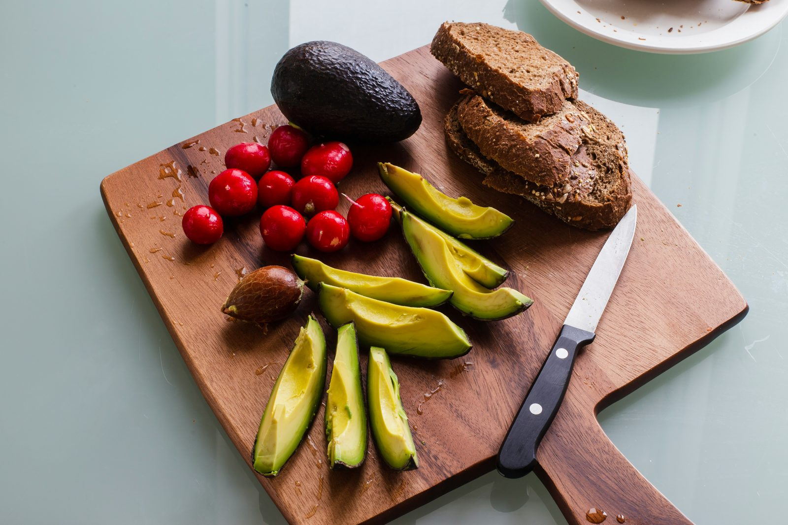

The ketogenic diet is one of the most discussed and studied diets of the past decade. It involves drastically reducing carbohydrate intake and replacing it with fat, putting your body into a metabolic state called ketosis. Here is everything you need to know to understand and apply it correctly.
What is ketosis?
Normally, your body runs on glucose (from carbohydrates) as its primary fuel. When you restrict carbohydrates to under 50g per day (typically 20–30g net carbs), glycogen stores become depleted. Your liver then begins converting fat into ketone bodies — acetoacetate, beta-hydroxybutyrate, and acetone — which become the primary fuel for the brain and body. This state is called nutritional ketosis.
The keto macro split
- Fat: 70–75% of total calories
- Protein: 20–25% of total calories
- Carbohydrates: 5–10% of total calories (typically 20–50g net carbs)
Foods to eat on keto
- Meat and fish: Beef, chicken, pork, lamb, salmon, sardines, mackerel
- Eggs: Whole eggs — one of the most keto-friendly foods
- Dairy: Cheese, butter, cream, Greek yoghurt (in moderation)
- Low-carb vegetables: Spinach, kale, broccoli, cauliflower, courgette, asparagus
- Nuts and seeds: Almonds, walnuts, pecans, chia seeds, flaxseeds
- Oils and fats: Olive oil, coconut oil, avocado oil, butter
- Avocado: One of the best keto foods — high in fat and fibre, low in net carbs
Foods to avoid on keto
- Grains and starches: Bread, pasta, rice, oats, cereals
- Sugar: All forms — table sugar, honey, maple syrup, agave
- Most fruits: Bananas, apples, grapes, mangoes, oranges (berries in small amounts are fine)
- Legumes: Beans, lentils, chickpeas, peas
- Root vegetables: Potatoes, sweet potatoes, carrots, parsnips
- Alcohol: Beer and sweet wines are too high in carbs
The keto flu
In the first 1–4 days of starting keto, many people experience flu-like symptoms: headache, fatigue, brain fog, irritability, and muscle cramps. This is called the "keto flu" and occurs because the kidneys excrete more sodium and water as glycogen is depleted. To minimise symptoms: drink more water, increase sodium intake (add salt to food), and ensure adequate potassium and magnesium.
Benefits of keto — what the evidence shows
- Rapid initial weight loss: The first 1–2 weeks often show dramatic weight loss of 2–5 kg due to glycogen and water depletion.
- Reduced appetite: Ketones suppress appetite hormones. Most people on keto report significantly reduced hunger.
- Blood sugar control: Keto dramatically reduces blood glucose spikes and can reverse type 2 diabetes markers in some people.
- Epilepsy treatment: The strongest evidence for keto — it reduces seizure frequency in drug-resistant epilepsy by 50%+ in about half of patients.
Who keto is NOT suitable for
- People with type 1 diabetes (risk of diabetic ketoacidosis)
- People with kidney or liver disease
- Pregnant or breastfeeding women
- Athletes in high-volume sports (carbohydrates are critical for performance)
How to start keto
- Calculate your keto macros: 70% fat, 20% protein, 10% carbs (use our Calorie Calculator)
- Clear non-keto foods from your kitchen
- Plan 3–4 days of meals in advance to avoid carb cravings
- Electrolytes: add salt to food and consider a magnesium supplement
- Track net carbs (total carbs minus fibre) for the first 4 weeks